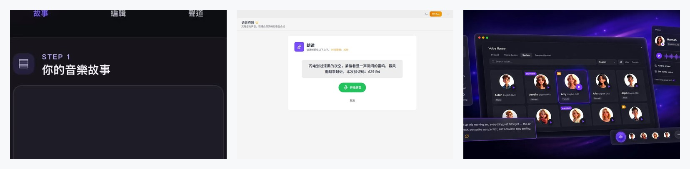
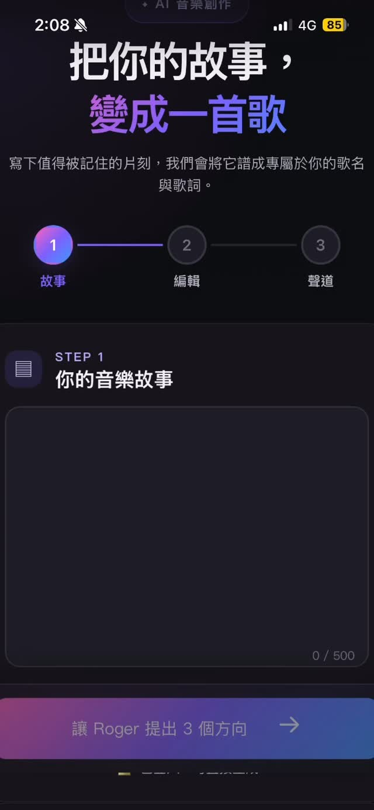

Threads｜PopPop AI / TTSFree AI：短句驗證的聲音克隆與跨語言 TTS 體驗

為什麼保存
這則 Threads 值得收錄，因為它捕捉到聲音克隆工具正在從「專業音訊模型」變成「桌面 TTS App 內建功能」：使用者只需朗讀短句、完成驗證，就能把自己的音色加入 voice library，之後把文字轉成多語音訊。
對課程、Podcast、短影音、教材旁白、自媒體與個人品牌來說，這代表「自己的聲音」開始能被當成一個可重複使用的內容資產；但同時也必須把授權、本人同意、標示 AI 合成與聲音濫用風險納入流程。
Threads 可見重點
來源是 Myra Xian（@myraxian1）的 Threads 貼文。作者表示：
- 試用的是 PopPop AI 的聲音克隆功能，位於桌面版 TTSFree AI 裡。
- 只要念一小句話並加上驗證碼，就能把自己的聲音克隆下來。
- 建立後，之後文字轉語音可直接使用自己的聲音。
- 作者與朋友主觀覺得還原度高，「真的有像到」。
- 該功能抓的是音色特徵，因此中文錄音也能拿去生成英文、日文、法文等支援語言。
- 跨語言時仍可能保留口音，例如中文聲音唸英文會帶一點中文口音。

官方來源查核
PopPop AI 官方 voice cloning 頁可查到以下描述：
- 產品頁標題為「TTSFree AI Voice Cloning: Fast Voice Replication for TTS」。
- 頁面描述「Clone your voice in minutes」「No studio recording needed」「Just read a short script」。
- cloned voice 會存入 voice library，之後可用於 text-to-speech projects。
- 頁面寫到「One Voice, Every Language」：以單一來源樣本保留 tone、pacing、emotional texture，並在其他支援語言中生成語音。
- 頁面 FAQ 也提醒：clone 自己的聲音或已取得明確授權者通常才合法；未經同意使用他人聲音可能涉及 privacy、publicity rights 與 intellectual property 風險。
TTSFree AI 官方頁則把它定位為 Windows / macOS 桌面文字轉語音 App，主張：
- 14-day free trial，no credit card required。
- 支援整份文件轉語音與批次處理。
- 200+ natural AI voices、50+ languages。
- Instant Voice Cloning for TTS：read two short sentences 後建立 custom AI voice。
實務判讀
這類工具的價值在於把「聲音素材」轉成可持續使用的 TTS preset：
| 用途 | 可能價值 |
|---|---|
| 教材旁白 | 用老師自己的聲音生成不同單元、不同語言版本。 |
| 短影音 | 快速製作穩定品牌聲線，不必每次錄音。 |
| 語言學習 | 同一音色跨語言輸出，展示口音與語音風格差異。 |
| 內容補錄 | 修改一小段腳本時，不必重新錄完整音檔。 |
| 個人品牌 | 把聲音變成與頭像、視覺、文字風格同等級的 IP 資產。 |
不過社群貼文中的「還原度高」是作者主觀聽感，仍需依個人聲音、麥克風品質、語言、語氣、情緒與平台模型版本實測。
風險與使用提醒
- 只 clone 自己的聲音，或取得本人明確授權；不要拿名人、學生、同事、客戶聲音測試。
- 對外發布時，建議標示「AI 合成語音」或保留使用紀錄，避免觀眾誤以為是本人即時錄音。
- 跨語言輸出可能有口音、語調不自然或情緒不一致，正式素材仍需人工聽審。
- 免費試用、支援語言、無限制等條件可能隨方案調整，實際使用前需看官方 pricing / terms。
- 若用於課程、商業、廣告或客服，應把 voice consent、撤回授權、刪除聲音模型與資料保存期限寫進流程。
欒帥可用的測試流程
- 先用乾淨麥克風錄一段 10–30 秒中文測試音。
- 建立 voice clone 後，用同一句中文、英文、日文短句測試。
- 評估三件事：像不像本人、語氣是否自然、跨語言口音是否可接受。
- 若要進課程或公開內容，先生成 15 秒 preview 給本人確認。
- 正式素材保留「原始授權、生成日期、平台、腳本文字、輸出音檔」記錄。